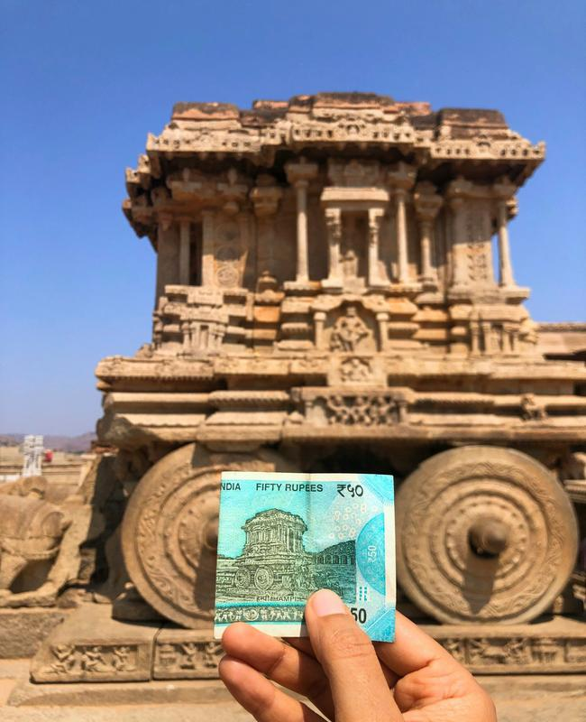
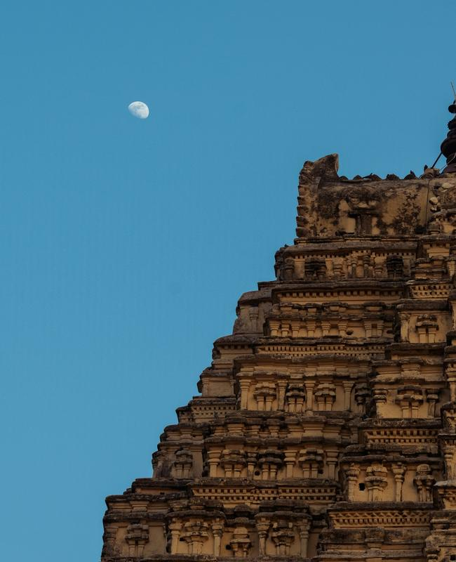
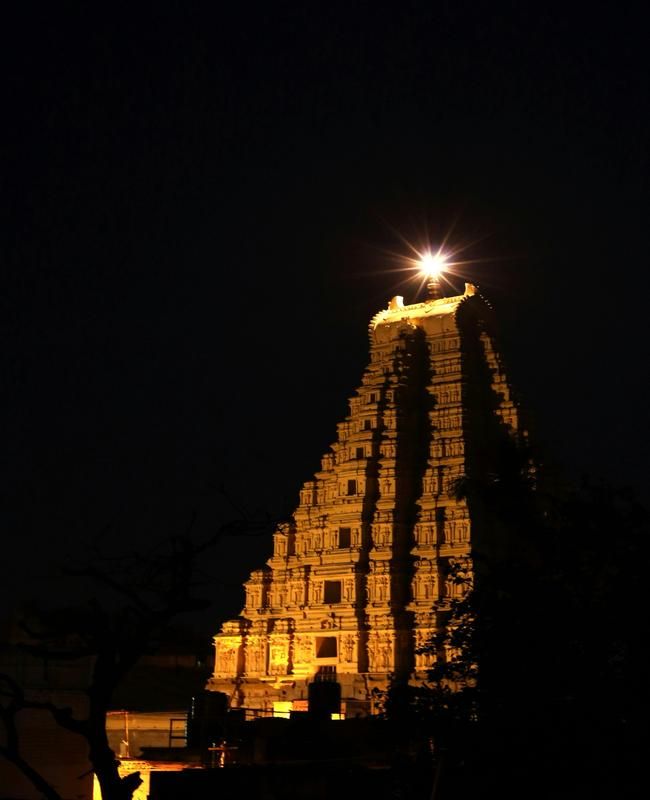

Exploring Hampi: The Essence of Vijayanagara Empire
Last Updated: April 3, 2025
Stepping into **Hampi** feels like traveling back in time. This **UNESCO World Heritage Site** in Karnataka, India, was once the glorious capital of the **Vijayanagara Empire**, a city of wealth, art, and grandeur. Today, its **ruins tell the story of a forgotten empire**, whispering through **massive stone temples, intricate carvings, and vast landscapes**.
🏛️ The Ruins of a Glorious Past
Hampi is spread across **over 4,100 hectares**, filled with **stunning temples, royal enclosures, and market streets** that once bustled with life. Some of the must-visit spots include:
🌟 Virupaksha Temple – The Living Legacy
- The **oldest functioning temple** in Hampi, dedicated to Lord Shiva.
- Marvel at the **tall, ornate gopuram (gateway tower)**, a stunning example of Vijayanagara architecture.
- Inside, the **ceiling murals** and the unique **pinhole camera effect** are worth witnessing.
🏯 The Stone Chariot – The Icon of Hampi
- One of the **most photographed monuments** of Hampi, located in the **Vittala Temple complex**.
- The **stone wheels were once movable**—a marvel of ancient engineering!
- The temple is also famous for its **musical pillars**, which produce different notes when tapped.



⛰️ Boulders, Landscapes & Sunset Points
Hampi is not just about its monuments; its **breathtaking landscapes** are just as mesmerizing. **Massive boulders**, rivers, and lush greenery create a **dreamlike setting**, especially during sunrise and sunset.
🌅 Matanga Hill – The Best Sunrise View
- A **moderate trek** leads you to the best sunrise point in Hampi.
- Watch the **golden sun rise over the temples and ruins**, illuminating the land with warmth.
- A perfect place to **capture stunning photographs** and embrace Hampi’s serenity.
🌿 The Riverside Experience
Across the **Tungabhadra River**, a **different side of Hampi** awaits—laid-back, peaceful, and surrounded by lush banana plantations.
🚣 Coracle Ride on the Tungabhadra
- Traditional **circular coracle boats** take you across the river.
- The ride offers **stunning views of temples, caves, and hills**.
- A perfect way to experience **Hampi’s natural beauty**.
🍛 Local Delicacies & Street Markets
Hampi is home to **small, charming cafés** and **local eateries** serving delicious South Indian food.
- Start your morning with **crispy dosas and strong filter coffee**.
- Try the famous **Banana Puri and Coconut Curry** at the riverside cafés.
- For a sweet treat, grab some **jaggery-based delicacies from the local stalls**.
🌍 Why Visit Hampi?
- 🏛️ **Rich history and stunning ruins** that bring the Vijayanagara Empire to life.
- ⛰️ **Mesmerizing landscapes** with boulders, rivers, and hilltop views.
- 🚶 **Perfect for history lovers, adventure seekers, and photographers**.
- 💰 **Budget-friendly destination** with great food and local hospitality.
✨ Final Thoughts
Hampi is a **blend of history, nature, and adventure**. Whether you’re an explorer, history enthusiast, or traveler looking for a unique experience, **Hampi never disappoints**. The magic of this place stays with you long after you leave.